Наука · журнал «ДентАрт» 2019 №4
Оцінка динаміки мінералізації емалі за проявом дифракції Фраунгофера
ASSESMENT OF THE ENAMEL MINERALIZATION DYNAMICS BY THE MANIFESTATION OF FRAUNHOFER DIFFRACTION
Володимир ГрісімовНа поздовжніх меридіональних шліфах видалених зубів проведено дослідження поширення світла в емалі зуба. Показано, що при падінні лазерного пучка на емаль перпендикулярно площині шліфа можна спостерігати дифракцію Фраунгофера. Встановлено, що наявність або відсутність дифракційної картини залежить від віку зуба і товщини шліфа. Отримані дані дозволяють зробити висновок про характер вікової мінералізації емалі в процесі її дозрівання, яка призводить до збільшення прозорості емалі і зменшення ступеня її оптичної анізотропії.
Вступ
Підвищений інтерес до вивчення оптичних характеристик твердих тканин зуба в сучасній стоматології зумовлений застосуванням методик прямих естетичних реставрацій зубів світлозатверджувальними матеріалами, а також використанням оптичних методів діагностики уражень зубів. Емаль і дентин завдяки наявності впорядкованих структур є анізотропними оптичними середовищами, в яких співвідношення пропускання і розсіювання світла зумовлені напрямком падаючого світлового потоку по відношенню до даних структур. У зв’язку з цим дослідження оптичних ефектів у твердих тканинах зуба, зумовлених анізотропією, дозволяє уточнити морфологічні особливості твердих тканин зуба, що мають значення для роботи клініцистів.
Мета статті – дослідити характер вікової мінералізації емалі зуба на основі прояву дифракції Фраунгофера.
Матеріали і методи
Для дослідження використовувалися інтактні зуби, видалені за ортодонтичними показаннями в терміни від одного до трьох років після прорізування (1-а група зубів) і в терміни від тридцяти до шістдесяти років після прорізування (2-а група зубів). Перша група включала премоляри і треті моляри верхньої та нижньої щелепи. Друга група включала різці, ікла, премоляри і моляри верхньої щелепи; ікла, премоляри і моляри нижньої щелепи. Із зубів готувалися плоскопаралельні вертикальні шліфи, що відповідали одній з меридіональних площин: вестибуло-оральна – для різців та іклів, вестибуло-оральна або мезіо-дистальна – для премолярів, діагональна – для молярів. Механічна обробка поверхонь шліфа абразивами (шліфування та полірування) здійснювалася на твердій основі, що виключало утворення будь-якого мікрорельєфу на поверхнях. Шліф зуба поміщали в скляну кювету, заповнену водою. Пучок світла від лазерного вузькосмугового напівпровідникового модуля з довжиною хвилі 532 нм, пройшовши через точкову діафрагму діаметром 230 мкм, перпендикулярно падав на поверхню шліфа, що примикає до діафрагми, з боку дна кювети. Пройшовши через зовнішню частину шару емалі, світловий потік потрапляв на екран. Провадилися візуальна оцінка та фотографування картини, утвореної на екрані світловим потоком, що вийшов із шліфа, у міру стоншування шліфа від товщини 1,20 мм до 0,30 мм. Схема експериментальної установки – на рис. 1. Діафрагму і кювету на рис. 1 не показано.
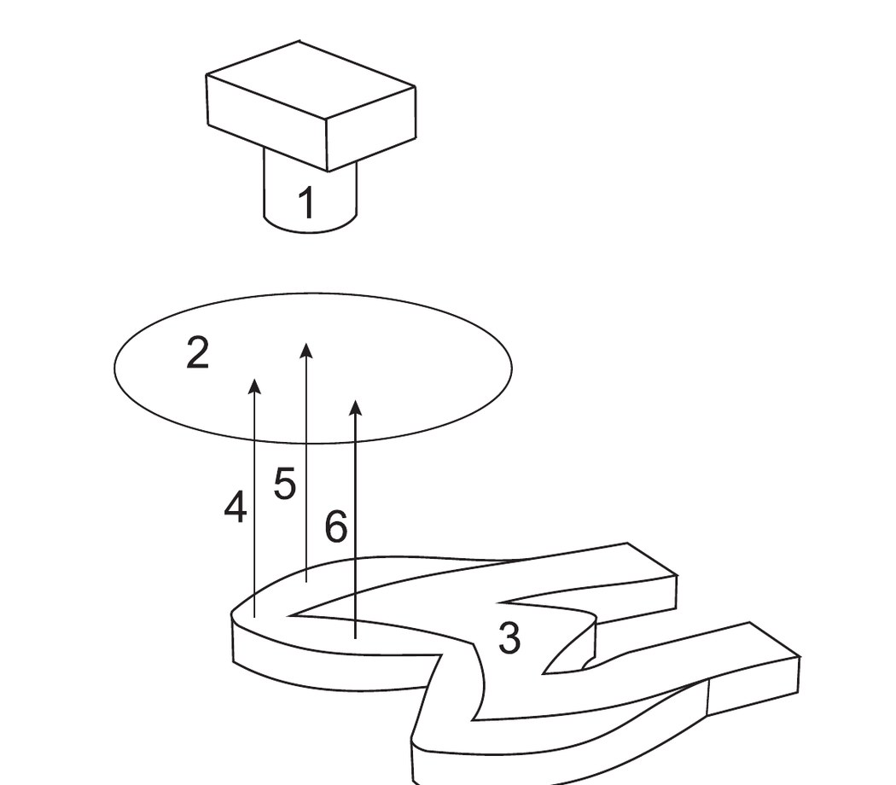
Результати
При проходженні лазерного пучка через емаль (рис. 1) характер картини на екрані залежав від віку зубів, товщини шліфа і ділянки емалі, через яку проходив пучок.
На шліфах різної товщини (від 1,20 до 0,30 мм) зубів будь-якого віку (2 група) при проходженні лазерного пучка через емаль у зоні ріжучого краю різців або верхівки горбика іклів, премолярів і молярів на екрані можна було побачити світлову пляму з розмитими межами, інтенсивність якої зростала в міру стоншування шліфа (фото 1). Аналогічна пляма виявлялася на шліфах товщини від 1,20 до 0,30 мм у всіх точках проходження лазерного пучка у зубів, видалених в терміни від одного до трьох років після прорізування (1 група).
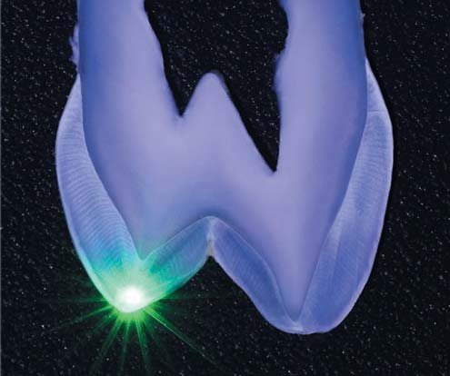
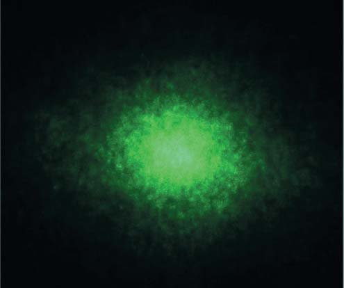
На шліфах зубів 2-ї групи при проходженні лазерного пучка через емаль у зоні вестибулярної, оральної, апроксимальної, а також жувальної поверхні на екрані можна було спостерігати дифракційну картину. Це був ланцюжок з трьох світлових плям (нульовий і два перших дифракційних порядки), вибудуваних у лінію, перпендикулярну напрямку призм (рис. 2, 3). Також можна було спостерігати ланцюжок з п’яти плям (нульовий, два перших і два другі порядки дифракції). При цьому виявлення дифракційної картини було пов’язане з двома взаємозалежними факторами: віком зуба і товщиною шліфа. Зі збільшенням віку зуба дифракційна картина виявлялася при збільшенні товщини шліфа. Так, у зубів, видалених в терміни від 50 до 60 років після прорізування, дифракційна картина спостерігалася на шліфах товщиною 1,20-1,10 мм. На одних зубах вона могла спостерігатися при стоншенні шліфа до товщини 1,00-0,95 мм, а на інших могла зникнути. У зубів, видалених в терміни від 30 до 50 років після прорізування, дифракційна картина спостерігалася при товщині шліфів від 0,90 до 0,40 мм. При цьому чим молодший зуб, тим менша була потрібна товщина шліфа. Слід зазначити, що діапазон товщин шліфа, при яких виявлялася дифракційна картина, зменшувався зі зменшенням віку зуба. Якщо за якої-небудь певної товщини шліфа виявлялася дифракційна картина, то при зменшенні товщини такого шліфа відбувалися її поступова зміна і зникнення. Цю динаміку зміни дифракційної картини подано на фото 4.
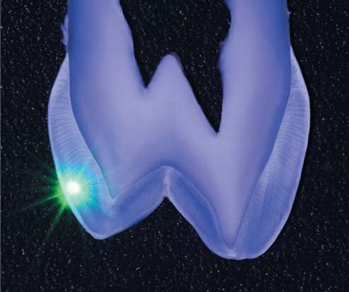

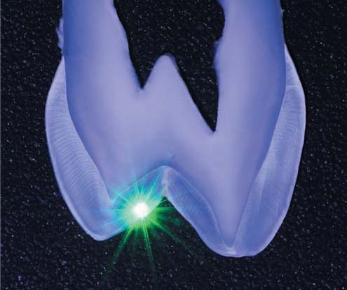
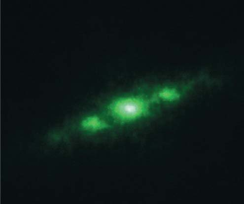
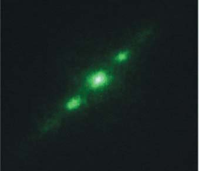
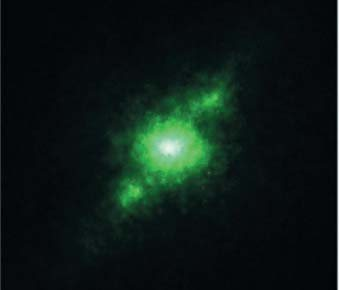
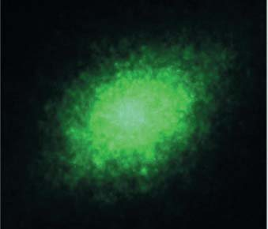
Обговорення
Відомо, що близько 95% маси (87% об’єму) здорової зрілої емалі становлять мінеральні речовини, близько 4% маси (11,5% об’єму) – зв’язана і вільна вода, близько 1% маси (1,5% об’єму) – органічні речовини.1 Останні утворюють матрицю, яка забезпечує впорядкованість структури емалі. Вплив органічної матриці на оптичні характеристики емалі невелика: ймовірно, вона відповідає за явища люмінесценції.2 Оптично значущими структурними елементами емалі є емалеві призми і кристали апатитів. Кристали апатитів схожі на сплощені палички, що мають у поперечному перерізі гексагональну форму. Довжина кристалів зрілої емалі приблизно становить від 500 до 1000 нм, а середній діаметр – 50-100 нм.3 Відстань між кристалами зрілої здорової емалі, за даними різних авторів, становить від 1-2 нм1 до 5 нм.4 Кристали формують більші структурні елементи – емалеві призми із середнім діаметром 4-5 мкм,1 які проходять через всю товщу емалі від дентино-емалевого з’єднання (ДЕЗ) до поверхні емалі.
Проекції емалевих призм на горизонтальні площини перетину зуба мають радіальні напрямки. У меридіональних перетинах орієнтація призм залежить від їх розташування. Біля шийки зуба призми орієнтовані горизонтально. У міру наближення до верхівки горбика або ріжучого краю положення призм відхиляється до вертикальної осі зуба. У зоні внутрішніх скатів горбиків премолярів і молярів призми орієнтовані майже перпендикулярно до поверхні ДЕЗ, трохи відхиляючись до вершин горбиків. У внутрішній половині шару емалі призми мають синусоїдальні вигини з кутами відхилення від свого загального напрямку до 20°.5 У пришийковій третині синусоїдальні вигини поширюються на всю товщину емалі. У зоні ріжучого краю і верхівки горбика вигини призм мають спіралеподібний характер.6 Призми зібрані в пучки, діаметр яких складається з 10-12 призм. Між призмами розташовується міжпризмова речовина, яка в емалі зубів людини має товщину близько 0,1 мкм.1
Результати проведеного дослідження засвідчують, що при падінні лазерного пучка на емаль перпендикулярно площині шліфа має місце розсіювання світла як на кристалах гідроксиапатиту, так і на емалевих призмах.
У незрілої емалі превалює розсіювання на неоднорідностях «кристали гідроксиапатиту – міжкристалічні простори». Тому незалежно від товщини шліфа і місця падіння лазерного пучка на емаль зубів першої групи на екрані виходила картина у вигляді світлової плями з розмитими межами (фото 1б).
У незрілої емалі розміри кристалів менші, а відстані між кристалами більші, ніж у зрілої емалі.7 Незріла емаль містить більше води та органічних речовин. У процесі дозрівання рівень мінералізації емалі збільшується, а кількість води й органічних речовин зменшується.8 За рахунок збільшення розмірів кристалів зменшуються відстані між ними. Процес дозрівання емалі у вигляді відкладення мінералів починається до прорізування зуба і триває після його прорізування протягом усього життя. Нерівномірне відкладення мінералів у процесі дозрівання призводить до того, що ще до прорізування формується різний ступінь мінералізації призм і міжпризмової речовини.9 Ця відмінність у ступені мінералізації зберігається і після прорізування, що зумовлює наявність різниці показника заломлення призм і міжпризмової речовини у зрілої емалі. Так, за розрахунковими даними, при об’ємній кількості мінеральних речовин призм 88% і міжпризмової речовини 70% показник заломлення призм становить 1,619, а міжпризмової речовини – 1,573.10
У зрілій емалі розсіювання на неоднорідностях «кристали гідроксиапатиту – міжкристалічні простори» має зменшуватися. Це дозволяє спостерігати дифракційну картину, що відповідає дифракції Фраунгофера,11 за рахунок неоднорідностей «емалеві призми – міжпризмова речовина».
Кожну емалеву призму можна розглядати як діелектричний циліндр, показник заломлення якого відрізняється від показника заломлення навколишнього середовища (міжпризмової речовини). При падінні світла під прямим кутом до осі одиночного циліндра кут розсіювання відносно малий і міститься в площині, перпендикулярній до осі циліндра.12 При падінні плоскої монохроматичної хвилі на періодичний ряд циліндрів перпендикулярно напрямку їх осей у результаті дифракції мають утворюватися дифракційні порядки, які у вигляді прохідних плоских хвиль є падаючим полем для подальших рядів циліндрів. Зі збільшенням кількості шарів, що складаються з рядів циліндрів на шляху падаючого світлового потоку, кут дифракції має збільшуватися. З цього випливає, що умовою спостереження дифракційної картини на екрані є відповідне поєднання кількості шарів циліндрів з величиною кута розсіювання на одиночному циліндрі.
Дифракція виявлялася на екрані в проєкції призм, що мають локальну періодичність структури і майже один напрямок перпендикулярно до лазерного пучка по всій товщині шліфа (фото 2, 3). У зоні ріжучого краю і верхівки горбика, де така періодичність і єдність напрямку відсутні, дифракція Фраунгофера не спостерігалася (фото 1). Наявність або відсутність одного напрямку призм на шляху лазерного пучка добре видно на тому ж шліфі верхнього премоляра при його товщині 0,35 мм у прохідному поляризованому світлі (фото 5). Локальна однорідність кольору емалі в зоні зовнішнього і внутрішнього скатів горбів, через які проходив лазерний пучок з утворенням дифракційної картини, говорить про те, що призми тут мають один напрямок, оскільки оптичні осі основної маси кристалів збігаються з напрямком призм.13 У зоні верхівки горбика такої локальної однорідності кольору немає, що підтверджує відсутність єдиного напрямку призм.
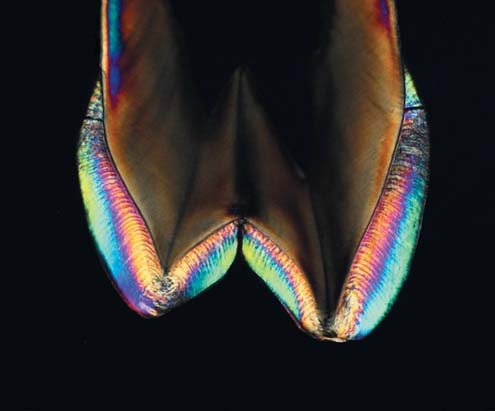
Результати експерименту засвідчили, що виникнення дифракційної картини пов’язане з двома взаємозалежними факторами: віком зуба і товщиною шліфа. Зі збільшенням віку зуба дифракційна картина виявлялася при збільшенні товщини шліфа. Цей феномен можна пояснити відкладенням мінеральних речовин у міжпризмові простори, що веде до зменшення різниці між значеннями показника заломлення призм і міжпризмової речовини. Зменшення цієї різниці має вести до зменшення кута розсіювання на одиночній призмі, внаслідок чого для виявлення дифракції потрібне збільшення товщини шліфа.
Зв’язок прояву дифракції з товщиною шліфа і ступенем мінералізації емалі був зафікований у зубів 2-ї групи, на шліфах яких виявлялися ділянки з аномальною гіпомінералізацією. На фото 6 – шліф нижнього премоляра, на емалі якого можна бачити ділянку у вигляді відносно широкої світлої смуги зі зниженою мінералізацією. Характер розташування смуги відповідає характеру розміщення ліній Ретціуса. При проходженні лазерного пучка через цю ділянку (2, фото 6) при товщині шліфа 0,98 мм дифракція Фраунгофера не виявлялася, але чітко виявлялася на сусідніх ділянках з нормальною мінералізацією (1, 3, фото 6). При зменшенні товщини шліфа до 0,57 мм на аномальній ділянці дифракція виявлялася, в той час як на тих же сусідніх ділянках з нормальною мінералізацією вона зникала при товщині 0,90 мм.
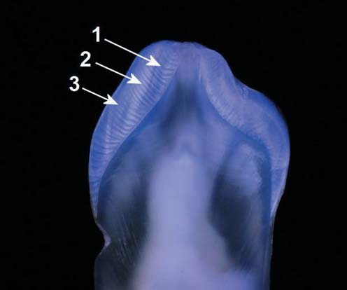
Висновки
Дифракція Фраунгофера, як і оптичний ефект у вигляді смуг Гунтера-Шрегера, які виявляються на шліфах зубів, – це прояв оптичної анізотропії емалі, зумовленої призмовою організацією її будови. Проведене дослідження засвідчує, що за вираженістю прояву дифракції Фраунгофера, її наявністю або відсутністю можна судити про структурні особливості емалі, пов’язані з її мінералізацією. З аналізу результатів дослідження зубів різного віку випливає, що в першу чергу в процесі дозрівання емалі за рахунок мінералізації відбувається зменшення оптичної неоднорідності на рівні «кристали гідроксиапатиту – міжкристалічні простори». Потім відбувається зменшення оптичної неоднорідності на рівні «тіло призми – міжпризмова речовина». Такі зміни повинні призводити до зменшення розсіювання світла емаллю і зменшення її оптичної анізотропії. Наслідком зменшення оптичної анізотропії може бути зникнення рисунка смуг Гунтера-Шрегера на препаратах емалі.14 Збільшення прозорості емалі незалежно від напрямку емалевих призм надає зубу вираженішої багатобарвності не тільки в напрямку від шийки до ріжучого краю або до жувальної поверхні, але і в проміжку між апроксимальними поверхнями. У цих ситуаціях при проведенні прямих естетичних реставрацій виправдане застосування реставраційних матеріалів зі зниженою опаковістю.15 Крім того, гомогенізація структури емалі на рівні «тіло призми – міжпризматична речовина» може вносити корективи при підготовці інструментально обробленої поверхні емалі для адгезивної техніки реставрації у вигляді збільшення часу її кислотного протравлювання.16
Література
- Arends J., ten Cate J.M. Tooth enamel remineralization // J. Crystal. Growth. – 1981. – Vol. 53, № 1. – P. 135-147.
- Spitzer D., ten Bosch J.J. The absorption and scattering of light in bovine and human dental enamel // Calcif. Tiss. Res. – 1975. – Vol. 17, № 1. – P. 129-137.
- Jongenbloed W.L., Molenaar I., Arends J. Morphology and size distribution of sound and acid-treated enamel crystals // Calcif. Tiss. Res. – 1975. – Vol. 19, № 1. – P. 109-123.
- Boyde A. Enanel. In: Berkovitz B.K.B., Boyde A., Frank R.M. et al. Teeth. – Berlin, etc.: Springer-Verlag. – 1989. – P. 309-473.
- Osborn J.W. Evaluation of previous assessments of prism directions in human enamel // J. Dent. Res. – 1968. – Vol. 47, № 2. – P. 217-222.
- Osborn J.W. Directions and interrelationship of prisms in cuspal or cervical enamel of human teeth // J. Dent. Res. – 1968. – Vol. 47, № 3. – P. 395-402.
- Daculsi G., Kerebel B. High-resolution electron microscope study of human enamel crystallites: size, shape, growth // J. Ultrastr. Res. – 1978. – Vol. 65, № 2. – P. 163-172.
- Goldberg M., Genotelle-Septier D., Molon-Noblot M., Weill R. Maturation tardive de l’email dentaire human // J. Biol. Buccale. – 1979. – T. 7, № 4. – P. 353-363.
- Kallistova A., Horáček I., Šlouf M., Skála R., Fridrichová M. Mammalian enamel maturation: Crystallographic changes prior to tooth eruption // Plos. – 2017. https://journals.plos.org/plosone/article?id=10.1371/journal.pone.0171424
- Zijp J.R., ten Bosch J.J. Groenhuis R.A.J. He-Ne laser light scattering by human dental enamel // J. Dent. Res. – 1995. – Vol. 74, № 12. – P. 1891-1898.
- O’Brien W.J. Fraunhofer diffraction of light by human enamel // J. Dent. Res. – 1988. – Vol. 67, № 2. – P. 484-486.
- Zijp J.R. Optical properties of dental hard tissues: Ph. D. Dissertation / State university of Groningen. – Groningen (The Netherlands), 2001. – 103 p.
- Грисимов В. Оптическая анизотропия эмали зуба // ДентАрт. – 2016. – №1. – С. 8-16.
- Grisimov V.N. Optical model of Hunter-Schreger bands phenomenon in human dental enamel. In: «Medical Applications of Lasers in Dermatology, Cardiology, Ophthalmology and Dentistry II»: Proc. SPIE. – 1999. – Vol. 3564. – P. 237-242.
- Грисимов В., Хиора Ж. Факторы многоцветности зубов и реставраций // ДентАрт. – 2013. – №1. – С. 15-24.
- Gondo R., Lopes G.C., Monteiro J.R.-S., et al. Microtensile bond strength of resin to enamel: effect of enamel surface preparation and acid etching time // J. Dent. Res. – 2003. – Vol. 82, Spec. iss. – P. 190. – Abst. 1424.